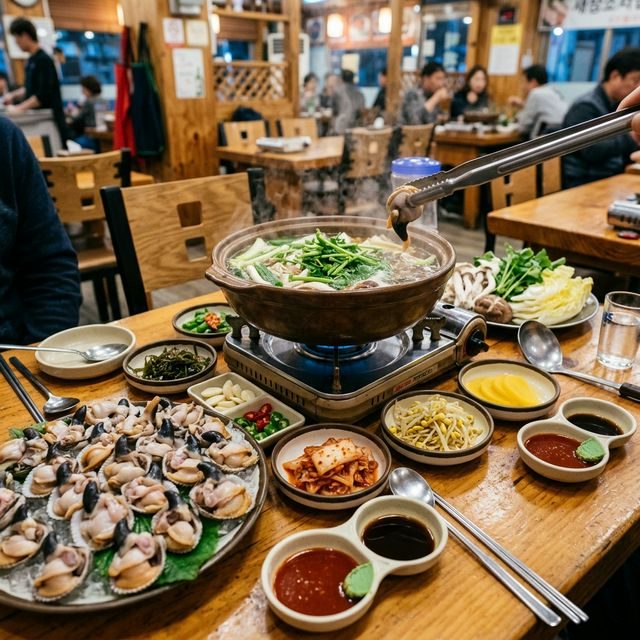

홍성 남당항 새조개 축제 2026 막바지 가이드 — 4월 제철 새조개 샤브샤브 맛집과 서해 낙조 감상 명당
서해의 보물, '조개의 황제'로 불리는 새조개를 맛볼 수 있는 시간이 이제 얼마 남지 않았습니다. 2026년 홍성 남당항 새조개 축제의 공식 행사는 종료되었지만,
4월 30일까지 수산물 특별 판매 기간이 연장되어 여전히 남당항 현지에서 신선한 새조개를 즐길 수 있습니다. 쫄깃한 식감과 은은한 단맛이 일품인 새조개 샤브샤브부터, 서해
바다를 붉게 물들이는 노을 전망대까지! 4월이 가기 전 꼭 들러야 할 남당항 미식 여행 코스를 집약했습니다.
1. 2026 남당항 새조개 시즌 및 판매 기간 안내
올해 홍성 남당항 새조개 축제는 지난 1월 중순에 개막하여 2월까지 화려하게 치러졌습니다. 하지만 축제가 끝났다고 해서 아쉬워할 필요는 없습니다. 새조개의 알이 가장 꽉 차고 맛이 깊어지는 시기인
4월 말까지 남당항 내 상인회에서는 풍성한 먹거리 장터를 상시 운영합니다.
특히 2026년 4월은 예년보다 수온이 적절히 유지되어 새조개의 수확량이 안정적인 편입니다. 4월 30일이 공식적인 수산물 특별 행사 종료일이므로, 이번 주말이 제철 새조개를
현지에서 가장 맛있게 즐길 수 있는 마지막 '피크 타임'이 될 것입니다. 서두르지 않으면 내년 겨울까지 기다려야 하는 귀한 명물을 놓치지 마세요.

각종 채소와 함께 끓여낸 맑은 육수에 새조개를 살짝 데쳐 먹는 남당항의 명물 샤브샤브 / AI 제작 이미지
2. 왜 사조개가 아닌 '새조개'인가? 특징 및 효능
새조개는 겉모양은 평범한 조개 같지만, 껍데기를 까면 나타나는 속살이 새의 부리 모양을 닮았다고 해서 붙여진 이름입니다. 이름뿐만 아니라 실제로 조개 발이 발달하여 헤엄을 치듯
이동하는 독특한 습성을 가지고 있습니다. 전복보다도 비싼 가격에 거래될 만큼 조개류 중에서는 단연 으뜸으로 꼽힙니다.
영양적인 측면에서도 새조개는 훌륭합니다. 타우린과 필수 아미노산이 풍부하여 피로 회복과 간 기능 개선에 탁월한 효과가 있습니다. 또한 콜레스테롤 수치를 낮추고 칼슘 흡수를 돕는
성분이 많아 남녀노소 누구에게나 좋은 보양식입니다. 칼로리 또한 낮아 다이어트를 고민하시는 분들에게도 부담 없는 최고의 '봄의 미각'입니다.
3. 2026 남당항 새조개 정찰제 시세 확인
남당항 상인회에서는 방문객들이 바가지 요금 걱정 없이 안심하고 즐길 수 있도록 가격 정찰제를 시행하고 있습니다. 2026년 시즌 공식 시세는 식당 이용 시 1kg당
100,000원, 포장 구매 시 1kg당 90,000원 수준으로 형성되어 있습니다. 이는 내장과 뻘을 깔끔하게 제거한 '순살 중량'
기준입니다.
간혹 저렴한 가격에 현혹되어 구매할 경우 실제 알의 크기가 작거나 중량이 부족할 수 있으므로, 상인회에서 인증한 공식 정찰제 업체를 이용하시는 것을 적극 권장합니다. 현장 가격은 조업량에 따라 약간의 변동이
있을 수 있으나 대부분의 식당에서 통일된 가격을 유지하고 있어 어디를 가든 균일한 품질의 서비스를 받을 수 있습니다.
4. 미식의 정점: 새조개 샤브샤브 맛있게 먹는 법
새조개를 먹는 가장 대중적이면서도 완벽한 방법은 샤브샤브입니다. 무, 대파, 배추, 버섯, 미나리 등을 넣고 우려낸 맑은 육수에 새조개 살을 15~20초 정도만
살짝 담갔다 먹는 것이 핵심입니다. 너무 오래 익히면 살이 질겨지고 특유의 단맛이 빠져나가기 때문입니다.
익은 새조개는 초장보다는 와사비를 곁들인 간장에 살짝 찍어 드셔보세요. 씹을수록 올라오는 바다의 감칠맛과 설탕을 뿌린 듯한 은은한 단맛을 오롯이 느낄 수 있습니다. 조개를 다 먹은 후 남은 진국 육수에 칼국수
사리나 라면을 넣어 끓여 먹는 '마무리 식사' 또한 축제 여행에서 절대 빼놓을 수 없는 즐거움입니다.
[이미지 생성 프롬프트]
Close up of raw, fresh bird shell meat (Saejogae) displayed on a
plate, unique shape resembling a bird's beak, glossy and high quality seafood, ratio 1:1
손질이 완료된 신선한 새조개 육질 / AI 제작 이미지
5. 4월의 깜짝 조연: 쭈꾸미와의 콜라보레이션
새조개 시즌의 막바지인 4월은 또 다른 봄의 전령사, 쭈꾸미의 전성기와 겹칩니다. 영리한 식도락가들은 남당항을 방문했을 때 '새조개 반, 쭈꾸미 반' 구성을 선택하곤 합니다.
알이 꽉 찬 쭈꾸미의 톡톡 터지는 식감과 새조개의 쫄깃함이 어우러지면 입안에서 그야말로 봄의 교향곡이 펼쳐집니다.
특히 4월의 쭈꾸미는 머리에 밥알 같은 알이 꽉 들어차 있어 일 년 중 가장 고소한 맛을 자랑합니다. 새조개 샤브샤브 육수에 함께 데쳐 먹으면 국물 맛이 더욱 깊어지는 효과도 있습니다. 한 번의 방문으로
서해의 대표적인 봄 수산물 두 가지를 모두 정복할 수 있는 4월의 남당항은 미식가들에게는 더할 나위 없는 축복의 공간입니다.
6. 서해안 최고의 낙조 명당: 남당 노을전망대
식사를 마친 후에는 배를 꺼뜨릴 겸 남당 노을전망대로 향해보세요. 바다를 향해 길게 뻗은 빨간색 산책로가 인상적인 이곳은 최근 SNS에서 핫플레이스로 떠오른 사진 명소입니다.
낮에는 푸른 서해 바다를 조망하기 좋고, 해 질 녘에는 하늘과 바다가 온통 붉게 물드는 장관을 감상할 수 있습니다.
만조 때는 발밑까지 바닷물이 들어와 마치 바다 위를 걷는 듯한 짜릿한 기분도 느낄 수 있습니다. 전망대 끝부분에 서서 남당항 전경과 천수만의 풍경을 배경으로 사진을 찍으면 인생샷을 건지는 것은 시간문제입니다.
4월의 선선한 바닷바람 소리와 함께 지는 노을을 바라보고 있으면 모든 걱정이 씻겨 내려가는 듯한 평온함을 느낄 수 있습니다.
서해 바다 위로 붉게 타오르는 노을과 남당 노을전망대의 환상적인 조화 / AI 제작 이미지
7. 가족 나들이의 완성: 남당항 해양분수공원
아이들과 함께라면 남당항 해양분수공원이 최고의 놀이터가 됩니다. 대규모 음악 분수와 함께 드넓은 잔디밭, 조형물들이 잘 갖춰져 있어 식사 전후로 시간을 보내기에 최적입니다. 특히
야간에는 화려한 조명과 함께 분수 쇼가 진행되어 낮과는 또 다른 볼거리를 제공합니다.
공원 내에는 네트 어드벤처 등 아이들이 뛰어놀 수 있는 공간이 마련되어 있어 가족 단위 여행객들의 만족도가 매우 높습니다. 널찍한 주차장과도 곧바로 연결되어 접근성이 뛰어나며, 주변의 깨끗한 화장실 등 편의
시설도 잘 관리되고 있습니다. 맛있는 새조개도 먹고 아이들은 마음껏 뛰어놀 수 있는 남당항은 가족 여행지로서의 매력이 충분합니다.
8. 집에서 즐기는 남당항: 새조개 택배 서비스
먼 거리 때문에 직접 방문이 어렵다면 전국 택배 서비스를 이용해보세요. 남당항의 대부분의 수산물 센터와 식당에서는 당일 아침 손질한 새조개를 신선하게 배송해 드립니다. 깨끗하게
손질된 조개 살과 함께 샤브샤브용 채소, 육수, 칼국수 면까지 패키지로 구성되어 있어 집에서도 간편하게 축제의 맛을 재현할 수 있습니다.
택배 가격은 현장 포장 가격과 동일한 1kg당 90,000원 내외이며, 배송비는 별도일 수 있습니다. 오후 2~3시 이전에 주문하면 다음 날 바로 받아볼 수 있어 홈 파티용이나 선물용으로도 인기가 높습니다.
산지 직송의 신선함이 그대로 담긴 아이스박스를 여는 순간, 여러분의 식탁이 바로 남당항 앞바다로 변모하게 될 것입니다.
9. 4월 남당항 여행 교통 및 주차 팁
남당항은 서해안 고속도로 광천 IC나 홍성 IC에서 약 20분 거리에 있어 접근성이 매우 좋습니다. 항구 전역에 대규모 공영 주차장이 마련되어 있으며 주차 걱정 없이 여유롭게
방문할 수 있습니다. 4월은 축제 기간만큼 혼잡하지는 않지만, 주말 점심 시간대는 여전히 붐비므로 조금 서두르시는 것을 추천합니다.
또한 남당항 인근에는 '어사리 노을공원'과 '궁리항' 등 조용한 해안 산책로가 줄지어 있습니다. 시간이 허락한다면 남당항에서 시작해 해안 도로를 따라 드라이브를 즐기며 조용한 서해의 봄을 만끽해보세요. 계절이
바뀌기 전, 쫄깃하고 달콤한 새조개 한 점으로 2026년의 봄을 더욱 풍성하게 기억하시길 바랍니다.